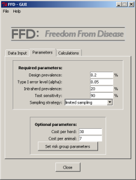

|
|
In practice, when conducting surveys to substantiate freedom from disease in large populations two-stage sampling strategies are often used in order to account for herd-level clustering of diseases. With two-stage sampling the questions that need to be addressed are a) how many herds need to be sampled and b) how many animals per herd need to be tested. Using a modified hypergeometric formula the optimal sample sizes can elegantly be computed, while incorporating imperfect diagnostic tests and finite populations; see Cameron and Baldock (1998a,b).
In the package FFD, tools for calculating optimal sample sizes (on animal and herd level) using sampling strategies "individual sampling" or "limited sampling" (see Ziller, et al., 2002) are implemented.
Both these sampling strategies have their merits, which can be analyzed and compared using the package FFD. Cost optimal sampling strategies can be determined finding the optimal herd sensitivity or sample limit, respectively. The package furthermore includes tools for evaluating the a-posteriori confidence corresponding to a specific sample of herds according to Kopacka et al., 2013. The package provides an easy-to-use graphical user interface (GUI). More advanced users can, however, make use of the provided S4-classes and methods, as well as the underlying conventional functions in order to fully make use of the maximum flexibility offered.
The latest release of the package FFD now offers the possibility to use risk-based sampling. Targeting high-risk population strata, the overall sample size and the cost of the surveys can be reduced, while still maintaining the same overall significance level.
|  |
Features
|
To install this package directly within R type:
install.packages("FFD", repos="http://R-Forge.R-project.org")
or download source code or binary from R-Forge.
{kind=link}
{kind=link}
{kind=link}
{kind=link}
{kind=link}
{kind=link}
{kind=link}